Show other papers
A Unified Spin-Fermion Framework for Magnetic Diversity in Chromium Monopnictides
Authors: Ruoshi Jiang, Bartomeu Monserrat
Type: theory · Category: strongly correlated electrons · PDF: https://arxiv.org/pdf/2609.31616v1
Analysis basis: full PDF text, analyzed in chunks
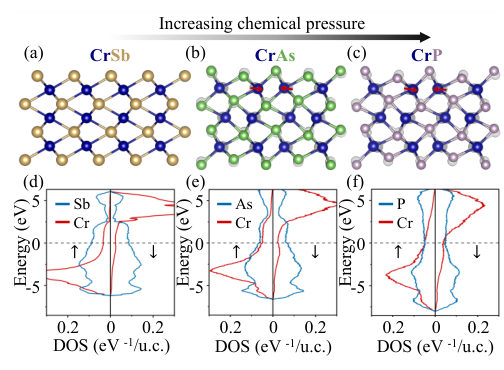
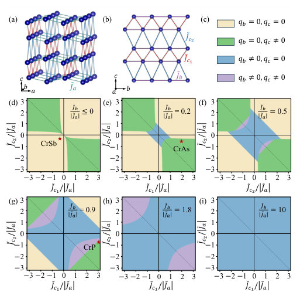
Summary. This work develops a unified spin-fermion framework to explain the magnetic diversity observed across the $ ext{CrX}$ monopnictides as the pnictogen element changes. By analyzing the evolution of exchange interactions under chemical pressure, the authors demonstrate that a common electronic structure can yield vastly different magnetic ground states, ranging from altermagnetism to incommensurate magnetism.
Why it may be interesting. The concept of using a unified spin-fermion framework to explain magnetic transitions driven by chemical substitution is highly relevant to understanding correlated electron behavior in novel materials.
Detailed structure
Main problem. The paper investigates how chemical pressure drives the dramatic evolution of magnetic ordering in the Chromium monopnictides ($ ext{CrX}$) series.
Main result. It establishes chemical-pressure-driven exchange reconstruction as a general mechanism capable of generating contrasting magnetic phases from a common spin-fermion electronic structure.
Method. The study combines first-principles calculations (DFT+U) with the construction of a unified spin-fermion model and a four-sublattice Heisenberg model.
Model / system. The system is the $ ext{CrX}$ series ($ ext{X}= ext{Sb}, ext{As}, ext{P}$), modeled using a spin-fermion Hamiltonian that describes localized $ ext{Cr}$ moments coupled to itinerant pnictogen carriers.
Key observables. Magnetic ordering vector ($\mathbf{q}$), effective $ ext{Cr}$ spin amplitude ($ ilde{S}$), and exchange parameters ($ ilde{J}_{ij}$).
Important parameters / regimes. Chemical pressure (substitution from $ ext{Sb}$ to $ ext{P}$), crystal structure type ($ ext{NiAs}$-type to distorted $ ext{MnP}$-type), and the Hubbard $U$ parameter.
Assumptions / limitations. The framework assumes a common spin-fermion electronic structure underlies the magnetic diversity, and that the magnetic behavior can be mapped onto a generalized Heisenberg model.
Figures summary. Figures illustrate the structural and electronic evolution across the $ ext{CrX}$ series, showing spin-resolved LDOS changes corresponding to different magnetic states.
Paper structure. The paper systematically analyzes the structural changes, derives the effective exchange interactions using an A-type AFM reference, and maps the resulting magnetic phase diagram to explain the observed transition from altermagnetism to helimagnetism.
Abstract
Isoelectronic compounds are generally expected to exhibit related electronic, structural, and magnetic behavior. Chromium monopnictides CrX (X= Sb, As, P), however, display a striking evolution from high-temperature altermagnetism in NiAs-type CrSb, through double-helical antiferromagnetism in MnP-type CrAs, to the absence of resolved long-range magnetic order in MnP-type CrP. Here, combining first-principles calculations in the non-collinear Curie-paramagnetic state, structural analysis, magnetic phase-diagram calculations, and exchange-parameter extraction, we establish a unified microscopic framework for this evolution. All three compounds share a formal high-spin $d^5$ configuration, nominally Cr$^{1+}$, coupled to itinerant states of predominantly pnictogen character. From Sb to P, chemical pressure enhances ligand itinerancy and drives the structural evolution from the high-symmetry NiAs lattice to increasingly distorted MnP-type networks. The accompanying reconstruction of competing Cr-Cr exchanges favors A-type antiferromagnetism in CrSb and double-helical order in CrAs, while placing CrP near a frustrated regime with closely competing magnetic tendencies. Our results establish chemical-pressure-driven exchange reconstruction as a general mechanism through which a common spin-fermion electronic structure can generate contrasting magnetic phases in strongly correlated materials.
Active-Space Quantum Simulation of N$_2$ Hydrogenation at a Ru Single-Atom Site on Ru(0001)
Authors: Geet Gupta
Type: theory · Category: strongly correlated electrons · PDF: https://arxiv.org/pdf/2609.30958v1
Analysis basis: full PDF text, analyzed in chunks
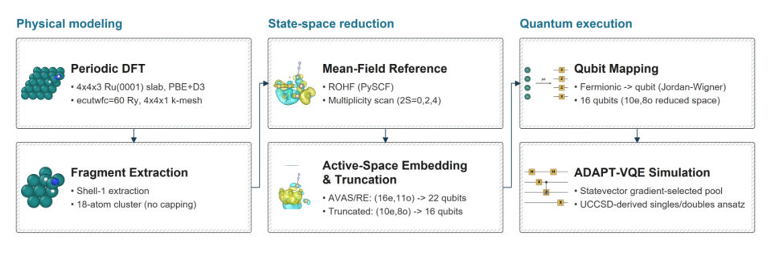
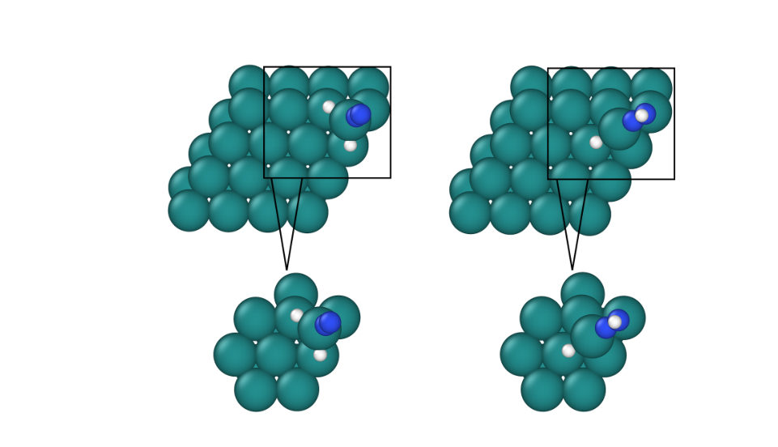

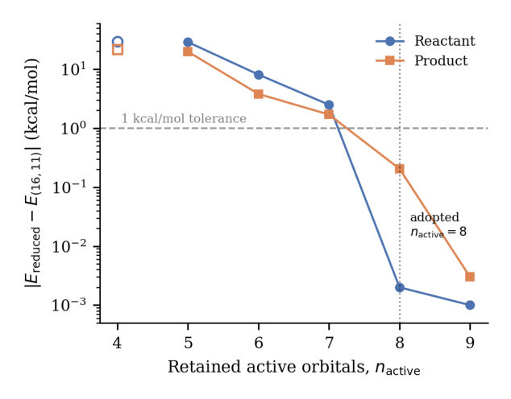
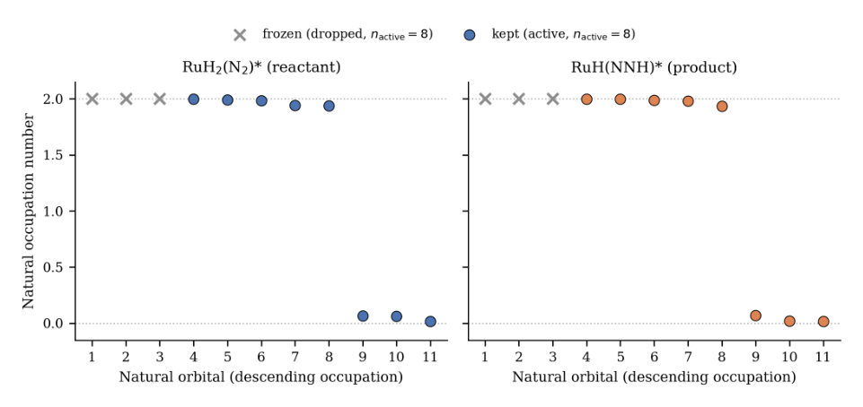
Summary. This work develops a comprehensive computational workflow to simulate the difficult $ ext{N}_2$ hydrogenation reaction at a single-atom catalyst site. It combines periodic DFT with active-space quantum simulation, reducing the problem to a manageable qubit system solved by ADAPT-VQE. The methodology successfully quantifies the reaction energy while rigorously testing the limitations of various correlation correction schemes.
Why it may be interesting. The integration of quantum computing methods (ADAPT-VQE) with high-level quantum chemistry (NEVPT2/DSRG-MRPT2) to solve strongly correlated chemical problems is highly relevant for simulating complex molecular dynamics.
Detailed structure
Main problem. The primary challenge is selectively activating the extremely strong triple bond of dinitrogen ($ ext{N}_2$) under mild conditions for hydrogenation catalysis.
Main result. The proposed workflow successfully maps the complex electronic structure problem onto a manageable qubit system, achieving high accuracy for the reaction energy ($ ext{error} = 0.2 ext{ kcal/mol}$) using a reduced active space.
Method. The study combines periodic DFT calculations with advanced quantum chemistry techniques, specifically using Active Atomic Valence Space (AVAS) selection, natural-orbital truncation, and solving the resulting Hamiltonian via ADAPT-VQE.
Model / system. The system modeled is the hydrogenation reaction ($ ext{RuH}_2( ext{N}_2)^ ightarrow ext{RuH}( ext{NNH})^$) occurring at an isolated single-atom $ ext{Ru}$ site embedded on a $ ext{Ru}(0001)$ surface.
Key observables. Reaction energy ($\Delta E_{ ext{hydrog}}$), CASCI state energies, and convergence metrics for quantum simulation.
Important parameters / regimes. The active space size is reduced from 22 qubits (AVAS) to 16 qubits (truncated), and correlation corrections are tested using NEVPT2 and DSRG-MRPT2.
Assumptions / limitations. The methodology relies on extracting a finite, non-periodic fragment from the periodic DFT structure, and the accuracy of the final result depends on the chosen active space reduction and correlation treatment.
Figures summary. Figures summarize the multi-step workflow: DFT relaxation $ ightarrow$ fragment extraction $ ightarrow$ active-space reduction $ ightarrow$ quantum execution using ADAPT-VQE.
Paper structure. The paper details a computational pipeline: first, periodic DFT relaxation is performed; second, a finite cluster is extracted; third, the active space is rigorously selected and truncated; finally, the reduced Hamiltonian is mapped to qubits and solved using ADAPT-VQE, supplemented by higher-level correlation corrections.
Abstract
Selective activation of dinitrogen (N$_2$) under mild conditions is difficult: N$\equiv$N is one of the strongest bonds in chemistry, and most heterogeneous catalysts capable of breaking it require high temperature and pressure. Atomically dispersed transition-metal sites offer a computationally tractable route to studying the strongly correlated intermediates involved. We connect periodic DFT calculations with correlated active-space calculations on a finite, non-periodic surface fragment, demonstrating the workflow for the hydrogenation step RuH$_2$(N$_2$) $\rightarrow$ RuH(NNH) at an isolated Ru$_1$ site on Ru(0001). A first-shell fragment is extracted from the periodically relaxed structure, an active space is selected with Active Atomic Valence Space (AVAS) around the Ru-N/N-H bond reorganization, and natural-orbital truncation reduces its cost while retaining the relevant correlated degrees of freedom. The reduced Hamiltonian is mapped to qubits with the Jordan-Wigner transformation and solved with the adaptive derivative-assembled pseudo-Trotter variational quantum eigensolver (ADAPT-VQE). Dynamic correlation beyond the active space is examined with strongly contracted NEVPT2 and DSRG-MRPT2. AVAS gives a 22-qubit active space, which natural-orbital truncation compresses to 16 qubits, reproducing the untruncated CASCI state energies to within 0.21 kcal/mol (reaction-energy error 0.2 kcal/mol). Statevector ADAPT-VQE in this reduced space converges for both reaction states under a fixed pool-gradient stopping criterion. NEVPT2 yields anomalously large, state-imbalanced corrections for the finite Ru fragment, while DSRG-MRPT2 retains an endothermic reaction energy at its default flow parameter, although its magnitude depends strongly on that parameter.
Classification of Generalised Triorthogonal Codes through Length 54
Authors: Adam Wills, Shubham P. Jain, Shraddha Singh
Type: theory · Category: quantum information and computing · PDF: https://arxiv.org/pdf/2609.30860v1
Analysis basis: full PDF text, analyzed in chunks
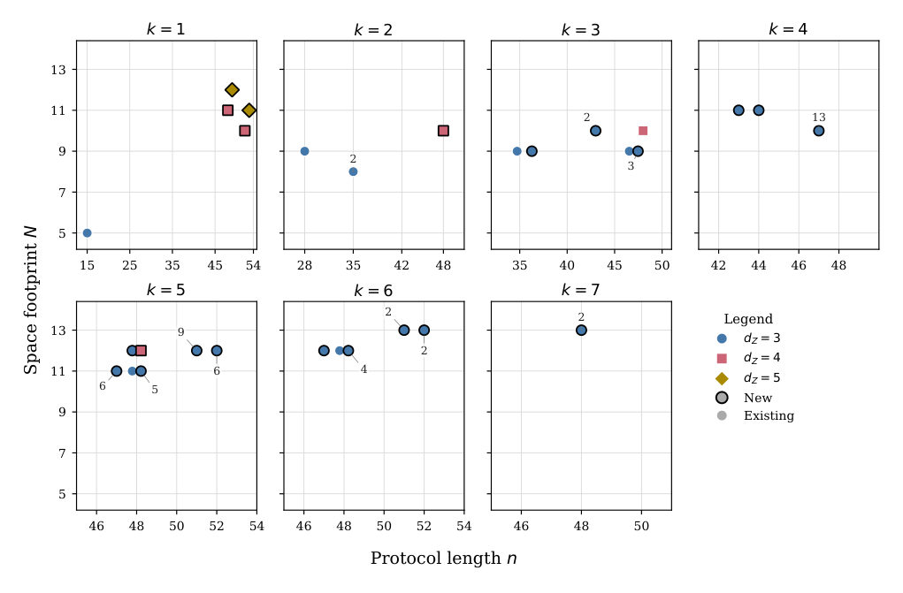
Summary. This paper provides a comprehensive, systematic classification of generalized triorthogonal codes used in magic state distillation for fault-tolerant quantum computing. By extending the search space up to input lengths of 54, the authors identified 74 optimal protocols, many of which are novel. The methodology relies on advanced algebraic techniques applied to stabilizer codes, providing a crucial resource for quantum information theory.
Why it may be interesting. This work provides a rigorous, exhaustive catalog of fundamental building blocks (magic states) required for scaling up quantum computation, directly impacting the feasibility analysis of fault-tolerant quantum algorithms.
Detailed structure
Main problem. The paper aims to systematically classify all optimal generalized triorthogonal codes used for magic state distillation (MSD) in fault-tolerant quantum computation.
Main result. The authors found 74 optimal generalized triorthogonal protocols for input lengths up to 54, with 65 of these protocols being new to the literature.
Method. The classification extends prior work using a directional derivative method applied to the structure of unital triorthogonal spaces, allowing the search space to be expanded from length 38 to 54.
Model / system. The context is fault-tolerant quantum computation, specifically the preparation of high-fidelity non-Clifford resources (T states) via Magic State Distillation. The protocols are mathematically modeled using generalized triorthogonal matrices defining a quantum CSS code structure.
Key observables. The key observables are the protocol's length ($n$), space footprint ($N$), and the distance ($d_Z$), which determine the protocol's efficiency and robustness.
Important parameters / regimes. The primary parameters are the input length $n$ (up to 54), the output qubit count $k$, and the distance $d_Z \ge 3$. Optimality is defined based on Pareto criteria across $(n, N)$ for a given $k$.
Assumptions / limitations. The classification assumes the protocol is run on logical qubits supporting fault-tolerant stabilizer operations, and the equivalence relation for magic states is defined up to CNOT and S gates.
Figures summary. Figure 1 illustrates the complete Pareto frontier mapping protocols based on output qubit count $k$. Table II provides the comprehensive catalogue of the 74 optimal protocols found.
Paper structure. The paper first establishes the problem in MSD, then details the mathematical framework using triorthogonal spaces and directional derivatives to extend the classification boundary. The bulk of the work involves the recursive, computationally intensive classification process, culminating in the presentation of the final catalogue of 74 optimal protocols.
Abstract
Magic state distillation is a widely considered primitive in fault-tolerant quantum computation for the preparation of high-fidelity non-Clifford resources. The most commonly considered class of such protocols are generalised triorthogonal codes; these distil $n$ noisy input $\mathrm{T}$ states into purified third-level diagonal magic states. Extensive prior work has searched this space of protocols, often using heuristic methods that do not guarantee optimality. Existing classification work is limited to protocols distilling $k$ output $\mathrm{T}$ states with $n+k\leq 38$ (Nezami and Haah, Phys. Rev. A 106, 012437 (2022)). In this work, we significantly expand this classification to all protocols with lengths $n\leq 54$. We restrict to distance $d\geq 3$ to keep the classification to a sensible size, and because efficient searches are well understood at distance $2$ (Singh et al., arXiv:2606.28518). Moreover, our results are complementary to synthillation (Campbell and Howard, Phys. Rev. A 95, 022316 (2017)), which can distil third-level states from $\mathrm{T}$ states, but only at distance $2$. Under optimality in terms of input count, space footprint, and distance for a given output, we find $74$ optimal generalised triorthogonal protocols in our range, $65$ of which are new to the literature. To achieve our classification, we extend the classification of unital triorthogonal spaces of Nezami and Haah from length $38$ to $54$ using a directional derivative method. Using these as the stabiliser spaces, we add logical rows that satisfy the triorthogonality constraints to create full protocols.
Complexity Barriers to State Preparation in Quantum Approximate Optimization
Authors: Stuart Hadfield
Type: theory · Category: quantum information and computing · PDF: https://arxiv.org/pdf/2609.31520v1
Analysis basis: full PDF text, analyzed in chunks
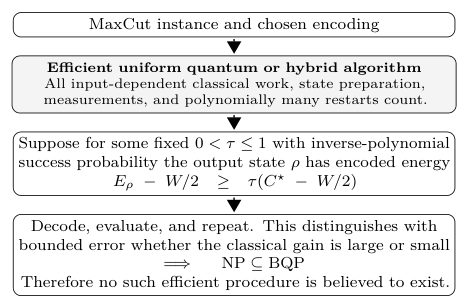
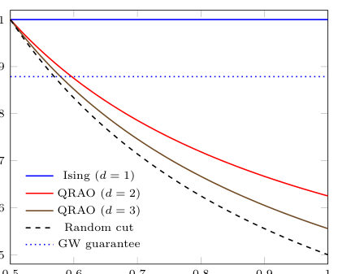
Summary. This paper establishes a strong complexity barrier for quantum approximate optimization algorithms applied to problems like MaxCut. By relating the problem's inherent classical hardness gap to quantum state preparation, the authors show that achieving a constant positive gain over random guessing would imply NP is solvable by quantum computers (NP in BQP). This work refines how performance must be measured in quantum optimization benchmarking.
Why it may be interesting. The work provides deep theoretical insights into the fundamental computational barriers inherent in quantum optimization, which is crucial for understanding the limits of quantum simulation and computation.
Detailed structure
Main problem. The paper addresses the theoretical limitations of quantum algorithms for approximate optimization problems, specifically distinguishing between simple approximation ratios and performance gains above random chance.
Main result. It proves that achieving a fixed positive fraction of the optimal classical gain above random for MaxCut implies that NP is contained in BQP, a result believed to be impossible.
Method. The analysis leverages the classical MaxCut-Gain hardness gap and relates it to the quantum expectation value of the Hamiltonian in various encoding schemes (standard vs. QRAO compression).
Model / system. The model is the MaxCut problem, analyzed using quantum Hamiltonians ($H_d$) and density operators ($ ho$) for both standard and compressed Quantum Random Access Optimization (QRAO) encodings.
Key observables. Performance gain above random assignments (MaxCut-Gain), the decoded mean gain, and the ratio of encoded energy gain to decoded mean gain.
Important parameters / regimes. The analysis considers relative quantum relaxation excess $\Theta(1/n)$ and the multiplicative factor $1/d^2$ relating encoded to decoded gain.
Assumptions / limitations. The result assumes that the quantum or hybrid procedure is uniformly efficient across all aspects (state preparation, measurement, classical processing).
Figures summary. Figure 1 illustrates the complexity consequence: achieving a state preparation guarantee implies NP is contained in BQP.
Paper structure. The paper first establishes the performance metrics (ordinary ratio vs. gain) and then uses the MaxCut-Gain hardness gap to derive a state-preparation barrier that survives QRAO compression, concluding with constructions showing the barrier's persistence.
Abstract
For many important optimization problems we are restricted to approximate solutions in practice due to computational complexity. Distinct from the exact optimization setting, approximate optimization admits performance measures beyond whether the optimum is found, with different tradeoffs and complexity. For MaxCut, a near-unity (ordinary) approximation ratio can coexist with near-zero improvement (gain) over a random cut. For the standard encoding, the unconditional classical MaxCut-Gain hardness gap implies that \emph{any uniformly efficient quantum or hybrid procedure recovering a fixed positive fraction of the optimal classical gain on every input, with at least inverse-polynomial success probability, would place} NP \emph{in} BQP. Such a procedure is therefore believed impossible under standard assumptions. We broadly address where our worst-case barriers do or do not apply across the quantum algorithm landscape. We prove that the barrier survives quantum random access optimization (QRAO) compression and applies between the classical and relaxed optimal values. For every input, a product state attains the classical optimum. Thus the barrier to reaching the classical threshold does not arise from a need for entanglement. For $d\in\{2,3\}$ variables per qubit, the known decoder transfers encoded energy gain to decoded mean gain by the exact factor $1/d^2$. Combining this identity with MaxCut-Gain hardness gives an operational preparation barrier for QRAO. We also construct hard $n$-qubit families with relative quantum relaxation excess $Θ(1/n)$, while the maximally mixed state has energy approximation ratio $1-Θ(1/n)$, zero encoded energy gain, and hence zero decoded mean gain. Our results separate the effects of relaxation tightness and energy approximation from operational accessibility, motivating more comprehensive accounting in benchmarking and performance assessment.
Complexity drives the symmetry breaking of temperature fluctuations
Authors: D. Rosales Herrera, M. Y. Gallegos Ruiz, A. Fernández Téllez, J. R. Alvarado García, J. E. Ramírez
Type: theory · Category: statistical mechanics · PDF: https://arxiv.org/pdf/2609.31521v1
Analysis basis: full PDF text, analyzed in chunks
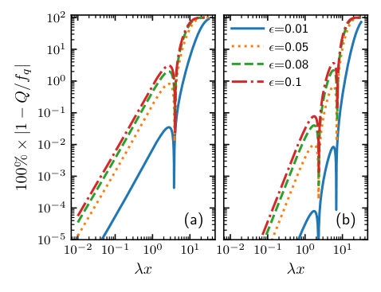
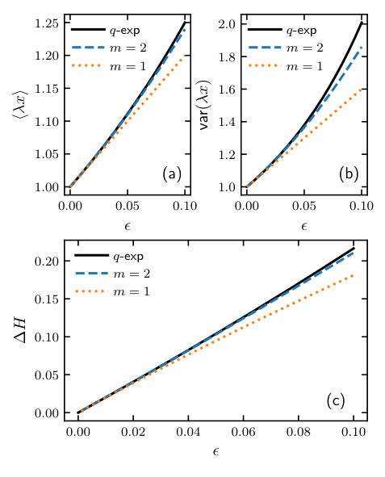
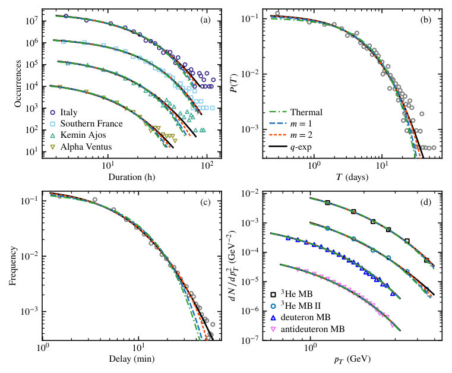
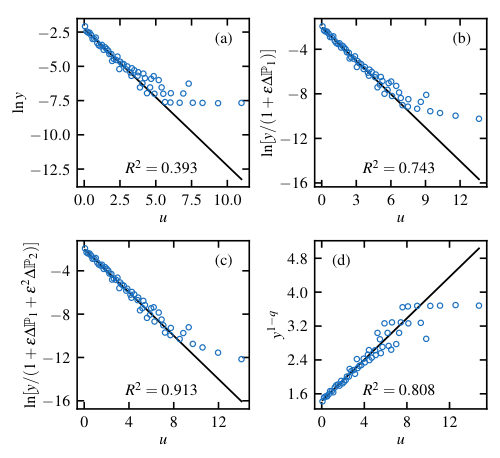
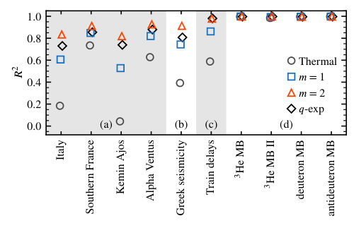
Summary. This theoretical work analyzes systems exhibiting nonextensive behavior using the $q$-exponential distribution. By deriving the statistics of temperature fluctuations, the authors demonstrate that the emergence of nonextensivity is mathematically linked to the symmetry breaking of these temperature fluctuations. This provides a generalized statistical tool for analyzing complex, non-equilibrium physical processes.
Why it may be interesting. The connection drawn between nonextensive statistical mechanics (Tsallis statistics) and fundamental thermodynamic concepts like temperature fluctuations provides a generalized framework for analyzing non-equilibrium dynamics in complex physical systems.
Detailed structure
Main problem. The paper investigates the relationship between the emergence of nonextensivity, characterized by the Tsallis $q$-exponential distribution, and the symmetry breaking observed in temperature fluctuations.
Main result. Nonextensivity is shown to be an emergent phenomenon directly associated with the symmetry breaking of temperature fluctuations, transitioning from symmetric to nonsymmetric statistics as the nonextensive parameter increases.
Method. The authors use perturbative series expansions of the $q$-exponential function to derive the quasithermal probability density function and analyze its statistical moments, including temperature fluctuations derived via Laplace transforms.
Model / system. The study models systems near thermal equilibrium using the Tsallis $q$-exponential distribution, analyzing both single-variable and joint bivariate probability distributions.
Key observables. Temperature fluctuations, mean $\langle x angle$, variance $ ext{var}(x)$, and entropy production ($\Delta H$).
Important parameters / regimes. The nonextensivity parameter $q$ (or $\epsilon = q-1$), which is analyzed in the limit where $q^{-1} \ll 1$.
Assumptions / limitations. The analysis relies on the validity of the perturbative series expansion for small deviations from equilibrium ($q \approx 1$), and assumes the system can be modeled by the quasithermal distribution.
Figures summary. Figures compare the quasithermal and $q$-exponential distributions against data for various complex systems (e.g., seismicity, wind power) and plot the evolution of moments and entropy production as a function of $\epsilon$.
Paper structure. The paper proceeds by deriving the perturbative series for the $q$-exponential, applying this to calculate statistical moments and temperature fluctuations, and finally demonstrating that the observed symmetry breaking in these fluctuations confirms the link between nonextensivity and thermal departure.
Abstract
Frequently, nonextensive systems are described through $q$-exponential functions, where the $q$-parameter determines how far a system is from equilibrium. In this work, we study systems constrained to $q-1\ll1$ to describe systems near thermal equilibrium, and derive the probability density function and temperature fluctuations. To this end, we derive the series expansion of the $q$-exponential function, yielding a perturbative series that is a superposition of gamma distributions. On the other hand, the temperature fluctuations are expressed as a superposition of Dirac delta functions and their derivatives, meaning that the bulk of the system remains at a constant temperature, while point-temperature variations emerge, marking the system's departure from thermal equilibrium. The statistics of the temperature fluctuations exhibit a transition from a symmetric to a nonsymmetric distribution as the nonextensive parameter increases. These results provide evidence of the association between the emergence of nonextensivity and the symmetry breaking of temperature fluctuations.
Construction of Partial Join Graphs with Perfect State Transfer in Shunt Decomposition-Based Quantum Walks
Authors: Banita Katuwal, Y Lakshmi Naidu, Srinath M S, Supriyo Dutta
Type: theory · Category: quantum information and computing · PDF: https://arxiv.org/pdf/2609.30490v1
Analysis basis: full PDF text, analyzed in chunks
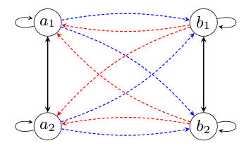
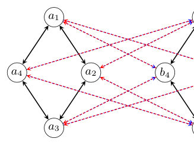
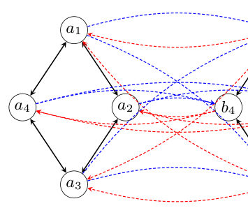
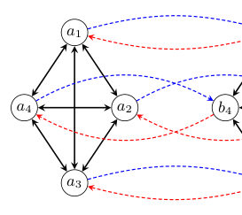
Summary. This paper develops a comprehensive mathematical framework to study quantum state transfer in quantum walks on complex graph structures called partial join graphs. By using shunt decomposition, the authors derive conditions for Perfect State Transfer (PST), showing that this operation can successfully induce PST in graphs that would otherwise fail to exhibit it individually. This expands the known class of graph families supporting robust quantum information transport.
Why it may be interesting. The work provides powerful mathematical tools (shunt decomposition, partial joins) to analyze quantum transport phenomena, which is directly relevant to designing quantum communication channels or quantum simulation architectures.
Detailed structure
Main problem. The paper investigates the conditions under which Perfect State Transfer (PST) occurs in quantum walks defined on complex graph structures called directed partial join graphs.
Main result. The authors establish a unified framework showing that the partial join operation can induce PST in graphs (like $K_n$'s partial join) even when the individual constituent graphs do not exhibit PST.
Method. The analysis relies on constructing discrete-time quantum-walk transition operators using the shunt-decomposition framework and deriving necessary and sufficient spectral conditions for PST and periodicity.
Model / system. The model is a discrete-time quantum walk (DTQW) operating on directed partial join graphs with signed couplings. The evolution is governed by a transition operator derived from the shunt decomposition of the graph's adjacency matrix.
Key observables. Perfect State Transfer (PST) (lossless state transfer between vertices/components) and periodicity of the quantum walk.
Important parameters / regimes. The size of the graph ($n$), the structure of the partial join, and the specific coupling signs are critical parameters.
Assumptions / limitations. The analysis assumes the applicability of the shunt-decomposition framework to model the quantum walk dynamics on the defined graph joins.
Figures summary. The notes reference figures illustrating the full join $K_{\vec{ op}}^2 \vee K_{\vec{ op}}^2$ and the reciprocal partial join $C_4(2,2) \vec{\lor} C_4$, demonstrating the graph structures analyzed.
Paper structure. The paper systematically defines the partial join graphs, constructs the transition operators via shunt decomposition, analyzes PST/periodicity for known families (complete graphs, bipartite graphs), and culminates in a double-cover construction to handle non-commuting operators.
Abstract
In this paper, we define directed partial join graphs with signed couplings and construct discrete-time quantum-walk transition operators for these graphs using the shunt-decomposition framework. The resulting transition operators apply to several important graph families, including complete graphs with loops, circulant partial joins, complete bipartite graphs, tensor powers of complete bipartite graphs, all with signed couplings. For each family, we identify the corresponding structure of the transition operator and derive necessary and sufficient conditions for periodicity and perfect state transfer (PST), when one of the two directed regular graphs admits PST. Based on these results, we identify two types of state transfer; internal PST, which occurs between vertices within the same graph, and coupling PST, which occurs between two components of join graphs. We further develop a double-cover construction for directed partial join graphs and derive conditions for periodicity and PST when the associated transition operators do not necessarily commute. Using this construction, we establish PST results for double covers of complete graphs with loops. In particular, we provide an example in which the complete graph \(K_n\) does not exhibit PST for \(n\geq4\), whereas a suitable partial join of \(K_n\) exhibits PST when \(n=2^m\), \(m\geq2\). Hence, these results extend the class of graph families admitting PST in shunt-decomposition-based quantum walks and provide a unified framework for studying quantum state transfer in graph joins, products, and covers.
Encryptability As a Coordinate Choice: Depth-One Homomorphic Federated Learning of Quantum Neural Networks
Authors: Marcel Mordarski, Nathan Mani, Arshad Patel, William Knottenbelt, Roberto Bondesan
Type: both · Category: quantum information and computing · PDF: https://arxiv.org/pdf/2609.30581v1
Analysis basis: full PDF text, analyzed in chunks
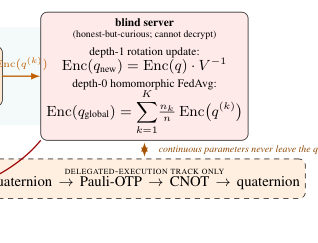
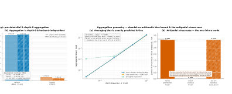
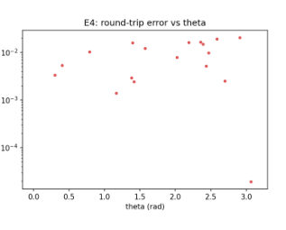
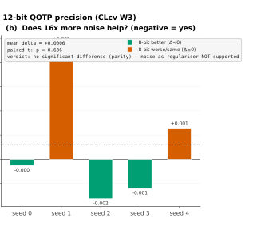
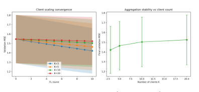
Summary. This paper solves the computational bottleneck in training quantum neural networks using federated learning under encryption. By reformulating the rotation parameters using unit quaternions, the authors reduce the required multiplicative depth in homomorphic encryption from prohibitive levels to just one. This enables a practical, non-interactive protocol validated across multiple cryptographic and hardware platforms.
Why it may be interesting. This work directly addresses the practical implementation gap in quantum machine learning by providing a concrete, resource-efficient cryptographic protocol for training quantum models in a decentralized, privacy-preserving manner.
Detailed structure
Main problem. Developing an efficient, non-interactive protocol for encrypted federated training of quantum neural networks (QNNs) while preserving privacy.
Main result. By using the unit-quaternion (spin) chart, the rotation update cost drops to one multiplicative level, eliminating the need for computationally expensive bootstrapping in homomorphic encryption.
Method. The authors leverage the bilinear nature of quaternion group composition to fit the entire federated averaging and update process within a single multiplicative depth of the homomorphic scheme.
Model / system. The system involves hybrid quantum-classical models where trainable parameters are continuous rotations in SU(2), represented by unit quaternions. The protocol combines lattice-based homomorphic encryption (for classical aggregation) with information-theoretic security for the quantum layer.
Key observables. Mean Squared Error (MSE), state fidelity (e.g., 0.9918), and the required multiplicative depth (shown to be $\le 1$).
Important parameters / regimes. The core parameters are the choice of coordinate system (quaternions vs. Euler angles) and the multiplicative depth of the HE scheme.
Assumptions / limitations. The security relies on the hardness of (Ring-)LWE for classical layers, while the quantum layer's security is information-theoretic. The protocol assumes an honest-but-curious server and peers.
Figures summary. Figures illustrate the hybrid encryption scheme, contrasting Pauli-OTP and Quaternion-OTP, and showing the end-to-end flow of a federated round through the encrypted stack.
Paper structure. The paper first identifies the computational bottleneck of QNN training under HE due to transcendental coordinates. It then introduces the quaternion chart solution, demonstrating how this algebraic property enables a depth-one, non-interactive federated protocol. Finally, it validates this protocol through extensive empirical and hardware testing.
Abstract
Encrypted training relies on keeping server-side updates low-degree. This constraint traditionally excludes models whose weights inhabit a compact Lie group (notably variational quantum circuits, where every trainable weight is an $\mathrm{SU(2)}$ rotation). Expressed in Euler angles or discrete alphabets, these updates appear transcendental, historically demanding prohibitive costs: one client--server round per gate, or upwards of $25{,}000$ operations per weight. This penalty is strictly an artefact of coordinates. In the unit-quaternion (spin) chart, group composition is exactly bilinear (degree two, with coefficients in $\{-1,0,+1\}$). Consequently, encrypted rotation updates cost one multiplicative level and federated averaging costs zero in any levelled homomorphic scheme, completely eliminating bootstrapping. This implementation-independent algebraic property is confirmed across two cryptographic backends, introducing only $0.0$ and $-2.0\times10^{-12}$ rad of aggregation error. Leveraging this reduction yields a non-interactive protocol for encrypted federated training of hybrid quantum--classical networks. It includes correctness proofs for aggregation and sign handling, plus a compilation lemma proving parameterised entanglers add only constant-factor overhead without altering the depth class. Empirically, a paired five-seed study confirms zero measurable utility tax ($Δ=+9\times10^{-6}$ MSE, $p=0.92$), and a noise-budget ablation falsifies the hypothesis that encryption noise regularises. These convergence trends replicate across datasets and scale to $20$ clients. Finally, hardware validation on a $156$-qubit processor achieves $0.9918$ fidelity against a $0.99957$ unencrypted control.
Entanglement transitions in holographic conformal interfaces
Authors: Evangelos Afxonidis, Rotem Berman, Ignacio Carreño Bolla, Shira Chapman, Carlos Hoyos, Osher Shoval
Type: theory · Category: statistical mechanics · PDF: https://arxiv.org/pdf/2609.30369v1
Analysis basis: full PDF text, analyzed in chunks
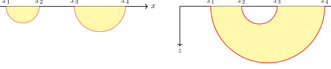
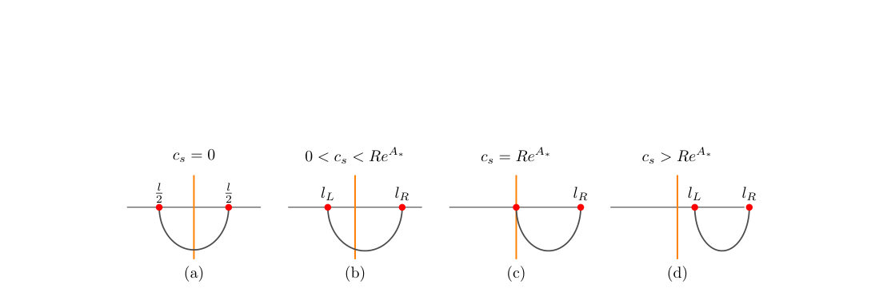
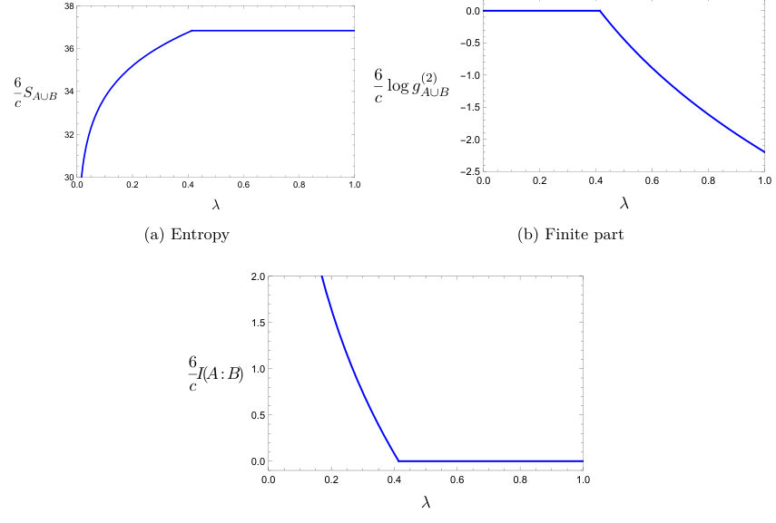
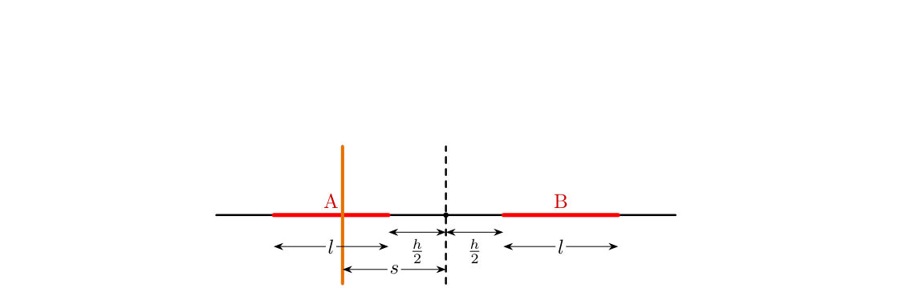
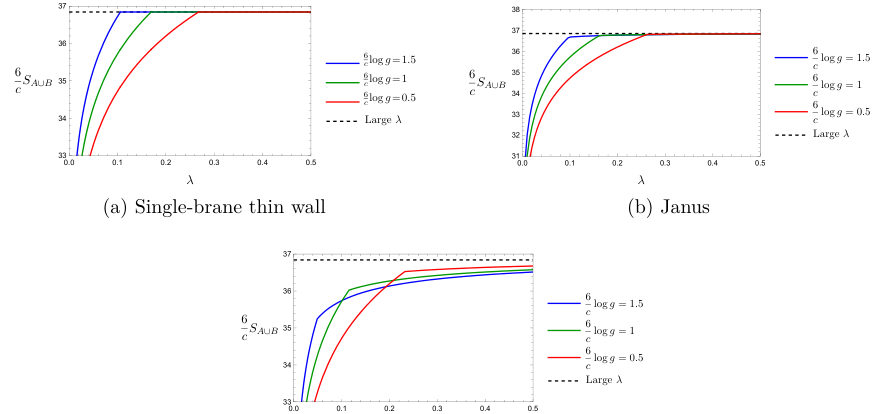
Summary. This work analyzes entanglement transitions across holographic conformal interfaces using the Ryu-Takayanagi formula. By studying various holographic models, the authors show that interfaces selectively weaken correlations across the boundary while maintaining or strengthening correlations within the same side. The findings reveal a universal behavior independent of the specific interface parameters.
Why it may be interesting. The concept of entanglement structure across boundaries is highly relevant to understanding quantum information flow in complex physical systems, analogous to interfaces or defects in condensed matter systems.
Detailed structure
Main problem. The paper investigates how the presence of a conformal interface modifies entanglement transitions for pairs of disjoint intervals in two-dimensional holographic conformal field theories.
Main result. The interface weakens correlations across itself while preserving or enhancing correlations between regions on the same side, and a universal 'Silver Blaze' transition point is identified.
Method. The analysis uses the Ryu-Takayanagi prescription and the mutual information to locate transitions between connected and disconnected geodesic configurations in holographic duals.
Model / system. The study focuses on 2D holographic interface conformal field theories (ICFTs), modeled using thin-wall geometries, the Janus solution, and the super-Janus solution.
Key observables. Entanglement entropy, mutual information, and the critical separation distance for entanglement transitions.
Important parameters / regimes. Boundary entropy ($\log g$), brane tensions ($\Sigma_1, \Sigma_2$), and the separation distance between the intervals.
Assumptions / limitations. The analysis assumes the CFTs on the two asymptotic sides of the interface have equal central charges for the primary results, though single-interval entropy is more general.
Figures summary. Figure 1 illustrates the two competing Ryu-Takayanagi geodesic configurations (disconnected vs. connected) for two intervals in pure AdS3.
Paper structure. The paper first discusses the single-interval entropy contribution, then uses mutual information to analyze the transition for two intervals, comparing results across different holographic models (thin-wall, Janus) and highlighting the universal 'Silver Blaze' configuration.
Abstract
We study entanglement transitions for pairs of disjoint intervals in two-dimensional holographic interface conformal field theories. We consider several holographic models with equal central charges on the two sides of the interface: thin-wall geometries with one and two branes, the Janus solution, and the super-Janus solution. We first discuss the finite interface contribution to the entanglement entropy of a single interval, distinguishing intervals that cross the interface from those that lie entirely on one side. We then use the mutual information to locate the transition between connected and disconnected Ryu--Takayanagi geodesic configurations for two intervals. When the interface lies between the two intervals, increasing the boundary entropy $\log g$, which provides a measure of interface strength in the models considered here, generally decreases the critical separation at which the connected configuration ceases to dominate. When both intervals lie on the same side of the interface, the behavior is model dependent: the connected phase persists to larger separations in the Janus and super-Janus models, while the critical separation is unchanged in the thin-wall models. Thus, as diagnosed by the two-interval transition, the interface weakens correlations across the interface while preserving or enhancing correlations between regions on the same side. We also identify a universal ``Silver Blaze'' configuration, in which the interface lies inside one of the intervals and the transition occurs at the same location as in a CFT without an interface, independently of the interface parameters and of the holographic model. This universality follows from a cancellation between crossing and non-crossing interface contributions to the mutual information.
From Received Power to Certified Secret Keys: A General Method for Bridging Classical FSO Link Budgets and Decoy-State QKD
Authors: Hasan Abbas Al-Mohammed
Type: theory · Category: quantum information and computing · PDF: https://arxiv.org/pdf/2609.30874v1
Analysis basis: full PDF text, analyzed in chunks
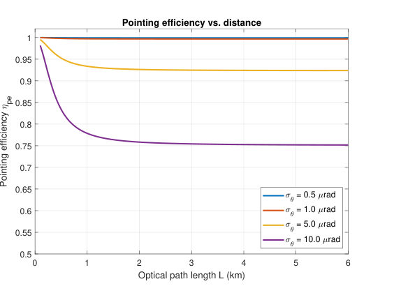
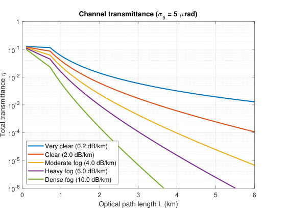

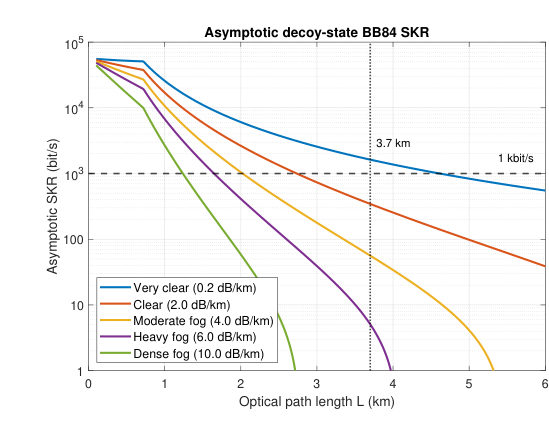
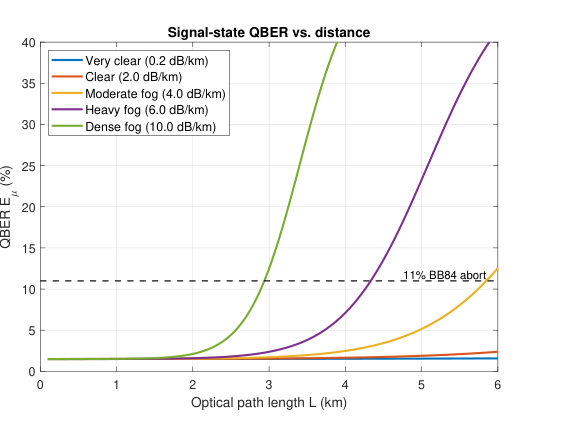
Summary. This paper develops a general framework to connect classical Free-Space Optical (FSO) link budgets to the security analysis required for Quantum Key Distribution (QKD). It uses decoy-state methods and finite-key analysis to predict achievable secret key rates and maximum communication distances. The result is a powerful tool for assessing the practical feasibility of quantum communication over atmospheric links.
Why it may be interesting. This work is highly relevant as it provides a crucial engineering bridge, translating macroscopic, classical engineering metrics (like link budget attenuation) into rigorous, quantum-secure key rate predictions, which is vital for practical quantum network deployment.
Detailed structure
Main problem. The paper addresses the critical gap between classical Free-Space Optical (FSO) link budgets, which predict received optical power, and the quantum requirement of certifying a secret key based on photon arrival flux.
Main result. The authors provide a general, deployment-independent framework that translates classical FSO link parameters into finite-key, decoy-state QKD security predictions, yielding specific distance limits under various atmospheric conditions.
Method. The methodology involves creating a parameter-symbolic interface to convert classical link losses into quantum transmittance, followed by applying finite-key analysis using Hoeffding and Chernoff bounds derived from decoy-state estimation.
Model / system. The system modeled is Free-Space Optical (FSO) communication, applicable across diverse platforms including satellites, drones, and terrestrial links. The quantum process analyzed is phase-randomized weak coherent pulse BB84 QKD, utilizing decoy-state estimation.
Key observables. Predicted one-kilobit-per-second distance limits (e.g., 2.727 km in clear air), finite key length ($\ell$), and the ratio of finite-key to asymptotic secret-key rates.
Important parameters / regimes. Link transfer ($\eta_{link}$), geometric collection ($\eta_g$), atmospheric extinction ($\eta_{atm}$), residual pointing ($\eta_{pe}$), and the number of emitted pulses ($3.33 imes 10^8$).
Assumptions / limitations. The predicted rates are explicitly stated as conditional performance predictions, not experimental security certificates. The framework relies on established security tools and assumes specific bounds for key and test basis counts.
Figures summary. Figures illustrate the comparison of distance limits (Classical vs. QKD) across fog conditions, the ratio of finite-key to asymptotic rates vs. block size, and the dependence of finite limits on vacuum preparation probability ($p_0$) and key-basis selection probability ($p_X$).
Paper structure. The paper establishes the problem by contrasting power vs. flux, introduces the link budget interface, details the decoy-state and finite-key analysis using advanced bounding techniques, and concludes with numerical results comparing classical and quantum distance limitations across various atmospheric models.
Abstract
Received optical power determines photon arrival flux, but photon arrival flux does not certify a quantum key. This paper gives a deployment-independent interface from a classical free-space optical (FSO) link budget to phase-randomized weak coherent pulse BB84, decoy-state estimation, and composable finite-key postprocessing. The channel interface separates geometric collection, atmospheric extinction, residual pointing, and detector efficiency, and states when common geometric and pointing expressions are approximations. The finite-key output follows the decoy-state analysis of Lim et al., with key- and test-basis counts estimated separately and an infinite-decoy asymptotic reference. The numerical study covers a five-level attenuation sweep, basis- and vacuum-probability sensitivities, a conditional Chernoff comparison, and integer-count Monte Carlo. For $3.33 \times 10^8$ emitted pulses, the Hoeffding-based predicted one-kilobit-per-second distance limits are 2.727, 1.883, 1.472, 1.236, and 0.962 km from very clear to dense-fog parameterizations. These are conditional performance predictions, not experimental security certificates. Satellite, drone, high-altitude-platform, terrestrial, and train links enter through the same interface but require their own propagation, acquisition, and device inputs. The framework integrates established security tools into an engineering procedure without claiming a new security proof or a universal range.
Generation of Photonic Graph States with minimal number of quantum emitters
Authors: Konstantinos-Rafail Revis, Nils Tomke Ottink, Pierre-Emmanuel Emeriau, Paul Hilaire
Type: theory · Category: quantum information and computing · PDF: https://arxiv.org/pdf/2609.30400v1
Analysis basis: full PDF text, analyzed in chunks
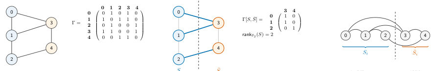
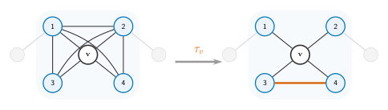
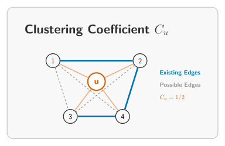
Summary. This paper tackles the resource optimization challenge in generating photonic graph states by focusing on minimizing the required number of quantum emitters. The authors propose and compare several heuristic algorithms to circumvent an NP-hard problem related to emission ordering. The results show significant reductions in required emitters, providing a more practical pathway toward building large-scale quantum processors based on photonic entanglement.
Why it may be interesting. This work provides crucial algorithmic advances for realizing complex quantum circuits using photonic platforms, directly impacting the feasibility and resource estimation for large-scale quantum computation and networking.
Detailed structure
Main problem. The core problem is developing efficient, deterministic methods to generate photonic graph states using the minimum possible number of quantum emitters.
Main result. The proposed heuristic algorithms demonstrate up to 30% reduction in required emitters on random graphs, with further potential savings of 20% when combined with existing gate optimization techniques.
Method. The authors developed and compared several heuristic polynomial algorithms (e.g., spectral ordering, simulated annealing variants) to optimize the emission ordering, which is computationally linked to the NP-hard linear rank-width problem.
Model / system. The system involves generating photonic graph states, which are fundamental entangled resources for measurement-based quantum computing and quantum error correction. The generation process models entanglement mediated by quantum emitters (like quantum dots) emitting photons.
Key observables. Number of emitters required, number of CNOT gates, total gate count, and runtime scaling across different graph structures (e.g., QECC families).
Important parameters / regimes. Graph structure (e.g., random graphs, specific QECCs like Steane or Shor), graph density ($p$), and system size ($n$).
Assumptions / limitations. The minimum number of emitters is determined by the graph's linear rank-width, and the authors bypass the NP-hard computation by using polynomial heuristics.
Figures summary. Figures compare the resource overhead (Emitters, CNOTs, Gates) and runtime scaling of four different optimization algorithms across varying graph densities and sizes, particularly for Quantum Error Correcting Codes.
Paper structure. The paper first establishes the theoretical link between graph state generation and the linear rank-width. It then introduces and compares multiple heuristic algorithms designed to minimize emitters by optimizing the emission sequence. Finally, it rigorously tests these algorithms' performance by comparing resource overheads across various complex graph families, such as those used in quantum error correction.
Abstract
Graph states are a fundamental resource for measurement and fusion-based quantum computing, quantum networks, and sensing. Preparing them in a photonic system deterministically is, in principle, possible, but finding efficient schemes to prepare them was a long-standing problem addressed recently. Additionally, heuristic optimization schemes for reducing the required number of two-qubit gates were developed. However, the problem of reducing the number of emitters by optimizing the emission ordering was not addressed, due to its computational complexity, as it is connected to a well-known NP-hard problem from graph theory, the linear rank width computation. In this work, we focus on developing heuristic polynomial algorithms to reduce the number of emitters required. In total, we propose four distinct algorithms, which demonstrate up to $30\%$ emitter reduction on random graphs. Furthermore, we provide numerical and statistical evidence that the combination of our optimization schemes with the preexisting algorithms for optimizing the two-qubit gates of the preparation protocol can further reduce them by around $20\%$. Finally, we examine the developed algorithms for various useful graph state families, such as graphs useful for measurement-based quantum algorithms, and cluster states and graph codes used for quantum error correction, to determine the performance of each algorithm.
Genuine Multi-Entropy of Fully Symmetric Gaussian States
Authors: Hugo A. Camargo, Mitsuhiro Nishida
Type: theory · Category: statistical mechanics · PDF: https://arxiv.org/pdf/2609.30754v1
Analysis basis: full PDF text, analyzed in chunks
Summary. This paper calculates the genuine multi-entropy for fully symmetric Gaussian states, a measure of multipartite entanglement in bosonic systems. Using the replica method, the authors derive exact results and asymptotic formulas, notably proving that the genuine multi-entropy vanishes for $n=2$. This work connects fundamental concepts of quantum information theory to physical scenarios like black hole evaporation.
Why it may be interesting. The study provides rigorous, analytical results for a complex entanglement measure (multi-entropy) in continuous variable systems, which is highly relevant for understanding quantum correlations in quantum optics and quantum field theory.
Detailed structure
Main problem. The paper investigates the genuine multi-entropy of fully symmetric Gaussian states, connecting it to multipartite entanglement measures in continuous-variable systems.
Main result. It analytically proves that the genuine $n=2$ Rényi multi-entropy for any pure bosonic Gaussian state is zero, and it derives asymptotic formulas for the genuine multi-entropy in the large squeezing limit.
Method. The analysis employs the replica method to calculate the multi-entropy using replica partition functions, which are evaluated using Gaussian integral formulas involving determinants of matrices.
Model / system. The system under study consists of fully symmetric Gaussian states of bosonic modes, which are ground states of quadratic Hamiltonians invariant under the full symmetric group $S_N$. The analysis is motivated by concepts from black hole evaporation and holographic entanglement.
Key observables. Genuine R\'enyi multi-entropy ($ ext{GM}^{(3)}_n$), local purity ($\mu$), and the replica index ($n$).
Important parameters / regimes. Squeezing parameter ($\mu$), replica index ($n$), and the number of bosonic modes in the subsystems ($N_A, N_B, N_C$).
Assumptions / limitations. The study focuses on highly symmetric, fully symmetric Gaussian states, and specific analytic continuations (like $n=2$ for the multi-entropy) are utilized.
Figures summary. Not specified, but the notes mention plotting the genuine Rényi multi-entropy as a function of the number of modes in the subsystems.
Paper structure. The paper defines the multi-entropy using the replica method, derives specific formulas for Gaussian states, proves the vanishing of $ ext{GM}^{(3)}_2$, and discusses asymptotic behavior and comparisons to random states.
Abstract
We study the tri-partite genuine Rényi multi-entropy of fully symmetric Gaussian states as a function of the squeezing parameter for different total number of bosonic modes under different subsystem configurations. Exact results for a few modes are obtained, and we conjecture an asymptotic formula at the limit of large squeezing parameter as a function of the replica index $n$, while also finding subleading subsystem-size dependent terms for $n=3$ under a specific tripartition. We analytically show that the genuine $n=2$ Rényi multi-entropy of any pure bosonic Gaussian states is zero for any number of modes and for any tripartition. Furthermore, to investigate the dependence on subsystem size, we plot the curve of genuine Rényi multi-entropy as a function of the number of modes in the subsystems while keeping the total number of modes fixed. We discuss differences and similarities between this result and studies of the multi-entropy curve for Haar random states. In particular, we identify a subsystem size configuration related with the multi-entropy time in an evaporating black hole for which the behavior of the genuine multi-entropy changes.
Highly elastic collisions of ultracold asymmetric top molecules in a static electric field
Authors: Reuben R. W. Wang
Type: theory · Category: other · PDF: https://arxiv.org/pdf/2609.31317v1
Analysis basis: full PDF text, analyzed in chunks
Summary. This theoretical study shows that applying static electric fields to asymmetric top molecules like $ ext{CaNH}_2$ can engineer strong, long-range dipole-dipole interactions. These interactions suppress inelastic loss channels, leading to highly elastic collisions at ultracold temperatures. This establishes a viable pathway for evaporative cooling and creating quantum degenerate gases of complex molecules.
Why it may be interesting. This work directly addresses the challenge of cooling and trapping complex, polar molecules, which is a major frontier in AMO physics, by engineering favorable long-range interactions.
Detailed structure
Main problem. To demonstrate that applying static electric fields to ultracold asymmetric top molecules can induce highly elastic collisions, thereby enabling the formation of quantum degenerate gases.
Main result. The study shows that dipolar interactions can cause the elastic collision rate to dominate over lossy collisions by up to three orders of magnitude at ultracold temperatures.
Method. Theoretical calculations involving the diagonalization of molecular Hamiltonians and close-coupling scattering calculations using the dipole-dipole interaction potential.
Model / system. The system involves reactive $ ext{CaNH}_2$ molecules, modeled as asymmetric tops, whose rotational and spin-rotation structure is modified by an external static electric field ($\mathbf{E}_{ ext{dc}}$).
Key observables. Elastic-to-loss collisional rate ratio, induced dipole moments, and the existence of field-linked bound states.
Important parameters / regimes. Electric field strength ($E_{ ext{dc}} < 1 ext{ kV/cm}$), ultracold temperatures, and molecular constants for $ ext{CaNH}_2$ and $ ext{SrNH}_2$.
Assumptions / limitations. The analysis is restricted to the lowest rotational manifold ($N=1, |K|=1$) and assumes dipole-dipole interaction dominates the long-range potential.
Figures summary. Figures illustrate the molecular spectrum and induced dipole moments vs. electric field, and plot rate coefficients (elastic vs. loss) vs. electric field or collision energy.
Paper structure. The paper systematically develops the molecular Hamiltonian, analyzes the effect of the electric field on the molecular eigenstates (K-doublets), and then uses scattering theory to calculate the resulting elastic and lossy collision rates.
Abstract
We propose that the application of static electric fields to reactive CaNH$_2$ molecules can result in large ratios of elastic to lossy collisions at ultracold temperatures. In the first rotationally excited manifold, the asymmetric top structure of CaNH$_2$ results in a $\approx 226$ MHz splitting of the opposite parity $K$-doublet states. This modest splitting allows electric fields below a kilovolt per centimeter to polarize the molecules and induce long-range dipole-dipole interactions. By increasing the electric field, we find that dipole-dipole attraction can become sufficiently large to induce weakly bound octatomic field-linked states of [CaNH$_2$]$_2$. In the absence of these field-linked states, we identify select molecular states where dipolar interactions allow elastic collisions to dominate over lossy collisions by up to three orders of magnitude, while maintaining loss rate coefficients at the $10^{-14}$ cm$^3$s$^{-1}$ level. These results establish that evaporative cooling is a viable route to quantum degenerate gases of laser coolable asymmetric top molecules. Access to such low entropy ensembles of asymmetric top molecules holds promise to push the frontiers of quantum simulation, state-resolved chemistry, and searches for beyond the Standard Model physics.
Modeling quantum neural network gradient with reinforcement learning
Authors: Nhan Trong Luu, Duong Trung Luu, Nam Ngoc Pham, Thang Cong Truong
Type: theory · Category: quantum information and computing · PDF: https://arxiv.org/pdf/2609.31066v1
Analysis basis: full PDF text, analyzed in chunks
Summary. This paper introduces RLQ-Grad, a novel reinforcement learning optimizer designed to train Quantum Neural Networks (QNNs). It overcomes the critical challenges of barren plateaus and exponential computational cost associated with calculating quantum gradients. By using a classical policy to propose updates, RLQ-Grad achieves massive speedups and maintains robust gradient variance across large qubit systems.
Why it may be interesting. It provides a novel, computationally tractable optimization framework for QML models, directly addressing the primary bottleneck (gradient calculation) that limits the practical application of variational quantum algorithms.
Detailed structure
Main problem. Training Quantum Neural Networks (QNNs) is severely limited by the barren plateau phenomenon (vanishing gradient variance) and the exponential computational cost of calculating quantum gradients.
Main result. The proposed RLQ-Grad optimizer bypasses explicit gradient computation by using a classical RL policy, achieving massive speedups and preserving gradient variance where traditional methods fail.
Method. The authors formulate QNN training as an RL problem, training a PPO agent to propose parameter updates directly, conditioned on the current state (parameters, loss, accuracy).
Model / system. The model involves QNNs built on hardware-efficient ansatz circuits using $n$ qubits and $L$ layers, trained for supervised quantum machine learning tasks.
Key observables. Gradient variance (showing decay for standard methods vs. flatness for RLQ-Grad), Top-1 validation accuracy, and computational time/memory complexity.
Important parameters / regimes. Number of qubits ($n$), number of layers ($L$), and the complexity scaling (linear in parameters vs. exponential in $n$).
Assumptions / limitations. The RL agent operates entirely in the classical domain, decoupling the optimization signal from the quantum circuit's intrinsic geometry.
Figures summary. Figures compare gradient variance across methods, and tables compare end-to-end memory and CPU time, demonstrating RLQ-Grad's superior resource efficiency.
Paper structure. The paper first identifies the limitations of QNN training (barren plateaus, high cost). It then introduces RLQ-Grad, detailing the RL formulation, proving its theoretical advantages (gradient variance preservation, polynomial scaling), and finally benchmarking its performance against state-of-the-art gradient estimation techniques.
Abstract
Training quantum neural networks (QNNs) on near-term hardware remains hampered by two compounding difficulties: the exponential vanishing of gradient variance known as the barren plateau, and the $\mathcal{O}(L \cdot 2^n)$ time and memory cost of differentiating through an $n$-qubit, $L$-layer circuit. We propose RLQ-Grad, a reinforcement-learning-based optimizer in which a classical policy $π_φ$ (a spectrally-normalized PPO agent) learns to propose parameter updates directly, conditioned on the QNN's current parameters, loss, accuracy, and previous update. Because the surrogate gradient is emitted by a classical network rather than obtained by differentiating through the unitary $U(θ)$, its variance is not constrained by the barren plateau concentration bound, and its cost scales with the number of trainable parameters rather than the Hilbert-space dimension. We prove these properties formally and verify them on a hardware-efficient ansatz across four supervised benchmarks with up to $n=20$ qubits. RLQ-Grad preserves a near-flat gradient-variance curve where backpropagation, parameter-shift, and adjoint differentiation decay by 1 to 2 orders of magnitude. Accounting for the full training pipeline (PPO rollouts, actor-critic updates, and optimizer states), RLQ-Grad needs under 2 MB of memory and runs $2490\times$, $7876\times$, and $673\times$ faster per iteration than these three methods at $n=20$. It improves top-1 accuracy by up to $+10\%$ over gradient-based baselines on circuits of up to 12 qubits, and matches dedicated barren plateau mitigation methods on CIFAR-10 at 14 to 20 qubits, where evolutionary and gradient-free optimizers collapse to chance.
Non-factor quantum dynamics and relativity
Authors: Octave Mestoudjian, Matt Wilson
Type: theory · Category: other · PDF: https://arxiv.org/pdf/2609.30942v1
Analysis basis: full PDF text, analyzed in chunks
Summary. This theoretical paper derives the mathematical constraints on local quantum dynamics when those dynamics must respect relativistic principles like locality and causality. By generalizing concepts from factor systems to non-factor quantum algebras, the authors prove that the evolution must be linear, unitary, and block-decomposable. This work provides a rigorous framework for understanding quantum evolution in complex, non-factor quantum settings relevant to quantum gravity.
Why it may be interesting. The derivation of the required structure of quantum dynamics from fundamental principles like causality and locality is crucial for developing a consistent quantum theory of gravity or spacetime structure.
Detailed structure
Main problem. The paper investigates the constraints imposed by relativistic principles, specifically locality and the absence of superluminal signaling, on the local evolution of quantum systems.
Main result. For non-factor quantum systems, any compatible local evolution must be linear, unitary, and must respect the block decomposition of the system, leading to 'routed quantum evolutions'.
Method. The analysis employs advanced mathematical formalism involving 'splitting maps' and 'generalised tensors' to characterize local operations in non-factor algebras.
Model / system. The system under study is a general quantum system described by non-factor algebras, relevant in theoretical contexts like quantum spacetimes and causal structures.
Key observables. The structure of the local evolution map ($L_\chi$), which must be linear and unitary.
Important parameters / regimes. The structure of the splitting maps ($\chi, u$) and the requirement of no superluminal signaling.
Assumptions / limitations. The analysis relies on generalizing concepts from factor systems and restricting the focus to canonical splitting maps.
Paper structure. The paper builds from generalizing known results for factor systems to non-factor systems, defining local evolution via postulates (locality, no superluminal signaling), and culminating in a characterization theorem (Theorem 5.1) that dictates the form of the evolution map.
Abstract
We consider the effect of relativistic principles on the structure of the local evolutions of non-factor quantum systems such as those which naturally arise in quantum spacetimes and causal structures. Generalising a former result that had been given for factor systems, we show that any evolution which can be applied locally on a direct sum of factor systems and without producing superluminal signals must be linear, unitary, and respect the block decomposition of the system.
Parallel and Distributed Fermionic Simulation via Dynamic Encoding
Authors: Michael Williams de la Bastida, Peter V. Coveney
Type: theory · Category: quantum information and computing · PDF: https://arxiv.org/pdf/2609.31502v1
Analysis basis: full PDF text, analyzed in chunks
Summary. This paper presents a novel, efficient method to parallelize the simulation of fermionic systems on multiple QPUs by optimizing the qubit encoding using combinatorial covering designs. By achieving a communication cost scaling of O(Mr), it significantly improves resource estimates compared to existing techniques. This advancement is crucial for scaling quantum simulations of molecular and condensed matter physics to larger systems.
Why it may be interesting. This work directly addresses the resource scaling challenges (communication overhead) inherent in simulating complex quantum many-body systems on near-term quantum hardware.
Detailed structure
Main problem. The core problem is efficiently parallelizing and distributing the Trotterized simulation of fermionic Hamiltonians across multiple Quantum Processing Units (QPUs).
Main result. The authors demonstrate that using combinatorial covering designs achieves a communication cost scaling of O(Mr), which is superior to previous bounds and other optimization methods.
Method. They propose using combinatorial covering designs to define a minimal set of fermion-qubit encodings, allowing the Hamiltonian simulation to be partitioned and executed in parallel across multiple QPUs.
Model / system. The system involves fermionic modes governed by the Electronic Structure Hamiltonian (ESH), which is simulated via time evolution using the Trotter-Suzuki approximation.
Key observables. Communication cost (measured by the number of inter-QPU fSWAP gates) and the complexity scaling of the required encodings.
Important parameters / regimes. M (number of fermionic modes), r (Trotter number), and the specific structure of the Hamiltonian terms.
Assumptions / limitations. The method assumes that all parallelized slices can be implemented without error, and it compares its performance against various encoding and partitioning strategies.
Figures summary. Figure 1 illustrates the qubit circuit diagram for parallelized first-order Trotterization using multiple circuit slices. Table I provides numerical comparisons of required encodings for various molecules using different methods.
Paper structure. The paper progresses by introducing the Trotterization of the ESH, detailing fermion-qubit encodings (like JW), introducing the concept of combinatorial coverings, and finally presenting the method for distributed fermionic Trotterization.
Abstract
We demonstrate a simple and efficient method to parallelize and distribute Trotterized Hamiltonian simulation of fermionic systems across multiple QPUs. Using combinatorial covering designs to define a minimal set of fermion-qubit encodings, we demonstrate communication cost scaling as $\mathcal{O}(M r)$ for a system of $M$ fermionic modes and Trotter number $r$, improving on the static encoding bound for $q$ QPUs, $\mathcal{O}(M^4 q r)$. We compare this approach to dynamic encoding using a randomised method, Pauli-weight based optimisation and hypergraph partitioning. Applying this to the Hamiltonians of a range of molecular systems, we find the combinatorial covering approach results in the lowest communication cost in all but the sparsest Hamiltonians.
Planar Contact Structures with Calabi-Yau Fillings and Topological Quantum Computation
Authors: Atsuhide Mori
Type: theory · Category: quantum information and computing · PDF: https://arxiv.org/pdf/2609.30406v1
Analysis basis: full PDF text, analyzed in chunks
Summary. This theoretical paper connects the geometry of planar contact structures to quantum computation by studying the Calabi-Yau condition on associated Stein fillings. The authors derive a criterion for this condition based on the factorization of a monodromy, showing that the topological constraints dictate the structure of the quantum state space. This suggests a fundamental link between contact topology and quantum entanglement.
Why it may be interesting. It provides a deep, mathematically rigorous link between advanced geometric topology (contact manifolds, Calabi-Yau geometry) and the fundamental structure of quantum computation, suggesting that topological constraints dictate quantum entanglement structure.
Detailed structure
Main problem. The paper investigates the relationship between the geometric properties of planar contact structures (specifically their associated Stein fillings) and the constraints imposed by topological quantum computation.
Main result. A criterion is established showing that the Calabi-Yau (CY) condition on the filling is equivalent to the existence of a specific 'trivialization' related to the factorization of the monodromy. Furthermore, the structure suggests that the choice of tensor product decomposition is determined by the lift, not just the braid group representation.
Method. The authors use techniques from contact topology, analyzing planar open books derived from lifting braids through branched covers, and applying algebraic criteria (like the trivialization condition) to determine the CY nature of the associated Stein fillings.
Model / system. The physical system involves planar open books derived from lifting braids through branched covers of the disk $D^2$. The quantum aspect is modeled via the Ising representation of the braid group acting on quantum state spaces, which relates to topological quantum computation.
Key observables. The first Chern class $c_1(W)$ (for the CY condition), the length of the factorization, and the structure of the resulting tensor product state space (e.g., qubits in the two-qubit doily).
Important parameters / regimes. The degree $d$ of the branched cover (with special attention paid to $d=3, 4, \ge 6$), and the specific monodromy $\phi$.
Assumptions / limitations. The analysis relies on the existence of a positive allowable factorization and the localization of the CY condition to subopenbook pieces. Uniqueness of the filling is only guaranteed for $d \le 3$.
Paper structure. The paper progresses by first establishing the geometric framework (planar open books, Stein fillings) and the CY criterion. It then analyzes the factorization structure, showing how the CY condition localizes to subcomponents. Finally, it connects this topological structure to quantum information by examining the resulting tensor product state spaces and the role of the lift versus the braid group representation.
Abstract
We study planar open books obtained by lifting braids through branched covers of the disk D^2, together with the quantum operations in the Ising representation. We note a criterion for the associated Stein fillings to be Calabi-Yau (CY). Among positive factorizations of a fixed monodromy, every CY factorization has minimal length, and its filling minimizes χand b_2. An application to Baykur's recent examples gives one planar contact 3-manifold with infinitely many non-homeomorphic CY fillings. The cover there is of degree \ge 6. At degree 4 a single CY filling forces every filling to be CY, and the filling is unique in a certain case; at degree \le 3 the filling is unique and is CY under a mild condition. Admissible cuts of the covering disk decompose the openbook into subopenbooks. Every positive factorization then localizes to the pieces, and the CY condition holds exactly when it holds locally. This makes the state space a direct sum of tensor products indexed by the compatible parity choices with at most two qubits in each factor when the pieces have degree \le 4, which is also the range in which the CY condition depends only on the monodromy. For a particular degree 4 cover, the points, lines and flags of the two-qubit doily are realized by the system of its subopenbooks. Fifteen liftable braids there share the same quantum operation and the same Stein filling, and are separated only by which subopenbook systems they admit. A choice of tensor-product structure is thus carried by the lift and not by the braid group representation, which suggests a link between contact topology and quantum entanglement.
Quantum Approximate Optimisation Algorithm for Protein Sidechain Packing
Authors: Sebastian O. M. Stewart, Nick Chancellor, Jonte R Hance, Ittoop Vergheese Puthoor
Type: theory · Category: quantum information and computing · PDF: https://arxiv.org/pdf/2609.31077v1
Analysis basis: full PDF text, analyzed in chunks
Summary. This paper presents a quantum-classical pipeline using QAOA to solve the NP-hard sidechain packing problem in protein folding, utilizing the backbone predicted by AlphaFold2. By developing a constraint-preserving ansatz with a ring mixer, the authors efficiently encode the energy minimization as a QUBO problem on qubits. The method successfully lowers the calculated conformational energy compared to the established AlphaFold baseline.
Why it may be interesting. The work demonstrates a sophisticated application of QAOA to a complex, classically hard problem in structural biology, specifically by engineering a novel, efficient ansatz (ring mixer) to manage qubit scaling.
Detailed structure
Main problem. The paper addresses the NP-hard problem of sidechain packing in protein folding, which involves finding the lowest-energy rotamer assignment for sidechains attached to a fixed protein backbone.
Main result. The proposed hybrid quantum-classical pipeline successfully lowers the conformational energy compared to the AlphaFold baseline when tested on the 5PTI protein.
Method. It employs the Quantum Approximate Optimisation Algorithm (QAOA) to map the energy minimization problem onto a Quadratic Unconstrained Binary Optimisation (QUBO) formulation.
Model / system. The system models protein sidechains, where rotamer assignments are encoded onto qubits using one-hot encoding. The optimization is performed on a Hamiltonian derived from the one- and two-body interaction energies.
Key observables. Conformational energy ($\Delta E$), the asymptotic shot-scaling metric ($S(N)$), and the cumulative success probability ($P_c(N)$).
Important parameters / regimes. Qubit count ($N$), rotamer count ($R$), and the confidence level of the AlphaFold prediction ($ ext{pLDDT}$).
Assumptions / limitations. The method assumes the backbone structure provided by AlphaFold2 is reliable enough to serve as a fixed scaffold, and it relies on a constraint-preserving ansatz to enforce one-hot validity.
Figures summary. Figures illustrate the reduction in gate scaling from $O(MN^2)$ to $O(MN)$ by using a cyclic ring mixer, and show the trend of the shot-scaling metric $S(N)$ versus qubit count for the 5PTI protein.
Paper structure. The paper details a multi-step pipeline: preprocessing with PyRosetta to define flexible regions, followed by QAOA optimization using a specialized constraint-preserving ansatz, and concluding with performance evaluation using specialized metrics against the AlphaFold baseline.
Abstract
Sidechain packing is a critical stage in protein folding, with direct implications for structure-based drug discovery. Google DeepMind's tool, AlphaFold2, predicts protein backbone reliably but sidechain positioning less accurately. Recovering the lowest-energy rotamer assignment over a fixed backbone is NP-hard. We present a hybrid quantum-classical pipeline that repacks sidechains on the AlphaFold backbone using the Quantum Approximate Optimisation Algorithm (QAOA), encoding the one- and two-body energies as a quadratic unconstrained binary optimisation (QUBO) problem. We introduce a constraint-preserving ansatz, pairing a W-state initialisation with a cyclic XY ring mixer, that enforces one-hot rotamer validity without penalty terms while keeping two-qubit gate scaling linear in the rotamer count. We also define an asymptotic shot-scaling metric, measured against the experimentally resolved conformation, that fixes optimiser quality independently of the baseline; its fitted growth stays below the classical exhaustive-search rate at moderate rotamer flexibility. Evaluated on bovine pancreatic trypsin inhibitor (5PTI) across high- and moderate AlphaFold-confidence regions, the pipeline lowers conformational energy against the AlphaFold baseline.
← Index · ← Previous · Next →